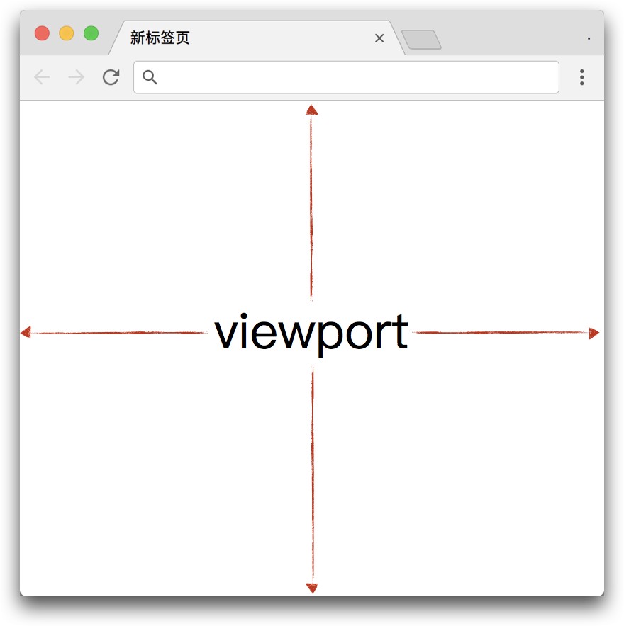
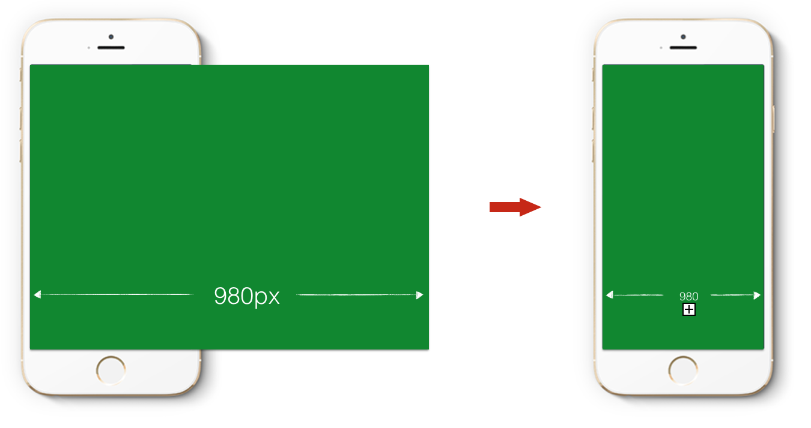
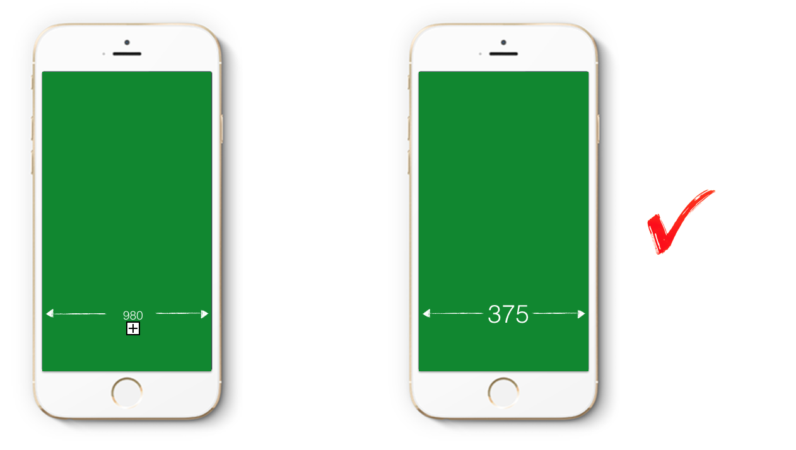

视觉格式化模型
既然元素会被渲染成一个个盒子，那么这些盒子在屏幕上的位置又是怎么放置的呢？这就是我们现在要说的——CSS 视觉格式化模型(visual formatting model)。视觉格式化模型是 CSS 布局的一个基础理论体系，需要你有一定的 CSS 功底，所以一时半会是很难掌握的，但是只要你一掌握，对于 CSS 布局就会豁然开朗。
一般来说，一个盒子的布局主要由以下几种因素决定：
- box dimensions and type.
- positioning scheme (normal flow, float, and absolute positioning).
- relationships between elements in the document tree.
- external information (e.g., viewport size, intrinsic dimensions of images, etc.).
翻译过来就是：
- 盒子尺寸与类型
- 定位方案（常规流，浮动，绝对定位）
- 文档树中元素之间的关系
- 其他信息（如视窗大小，图片原始大小等）
虽然看起来就这几行，但是实际涉及内容非常多，所以这里先介绍两个基本点（视窗大小与容器块），其余的将会以其他文章的形式继续深入。
视窗大小（viewport size）
简单来说，视窗大小就是浏览器中可视区域的大小，如下图：

当然视窗大小并不是恒定不变的，我们可以通过拖动改变浏览器大小来改变视窗的大小。
如果网页内容超过视窗大小，则默认将会出现滚动条，用于查看超出部分的内容，至于具体超出部分是否可见其实是通过 CSS 的 overflow 属性来控制的。
在智能机未出现以前，可以这么说：视窗大小就是浏览器中可视区域的大小。但是当智能机的出现，为了让用户能够方便访问 PC 的站点（一开始并没有专门为智能机开发网页），所以设置了默认的视窗大小为 980px，然后又整体缩放到可视区域大小，如下图：

当然这种一锤子的缩放体验其实是非常糟糕的，要查看信息的话，得去放大拖动等。不过能访问总比不能访问好，但是随着智能机的席卷，能访问已经升级到要求更好的用户体验了。很显然如果视窗大小跟可视区域大小相等，不需要缩放那体验应该是很好的，如下图：

于是，为了追求更好的用户体验，我们需要设置 viewport 的宽度为设备宽度，默认不缩放。代码如下：
<meta name="viewport" content="width=device-width, initial-scale=1.0">
关于 viewport 更深入的了解，可参考：移动前端开发之viewport的深入理解
容器块（containing blocks）
一般来说，盒子定位和大小都是参考一个矩形边缘来计算的，而这个矩形就是该元素的容器块（containing block），其原文定义如下：
“The position and size of an element's box(es) are sometimes calculated relative to a certain rectangle, called the containing block of the element. ”
一个元素的容器块大概定义如下：
- 首先根元素就是一个初始容器块（initial containing block）；
- 其次，如果元素的
position是 'relative' 或 'static'，其容器块就是由离它最近的块容器父级元素或创建了一个格式上下文的父级元素生成； - 如果元素设置了
position: fixed;，它的容器块一般由视窗生成； - 如果元素设置了
position: absolute;，则它的容器块就是由设置了position为relative，absolute或fixed的最近父级元素生成，如果父级元素都没有设置，则由根元素生成； transform属性值为非none的元素会生成一个容器块，其 fixed 的子元素会以此定位。
同样，这也很难理解，不如来个简单的例子。假设你有个书房，如下图所示：
- 首先你的房子是一个初始的容器块（相对于根元素），书房的定位和大小是根据你房子总大小来计算的。
- 而书桌和墙上书柜的位置是基于书房来确定的，那么书房就为书桌和书柜生成了一个容器块。
- 最后电脑和杯子又是放在书桌上的，那么书桌又为电脑和杯子生成了一个个容器块。
简单来说一个容器块，会直接影响到其子元素的定位或大小。
关于容器块的规范定义可参考：Definition of "containing block"